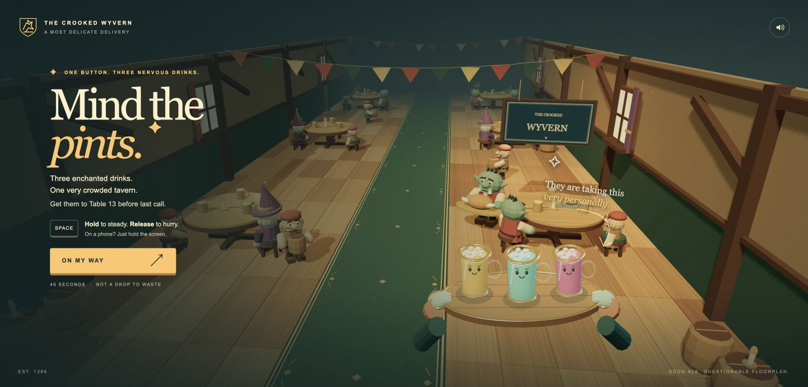
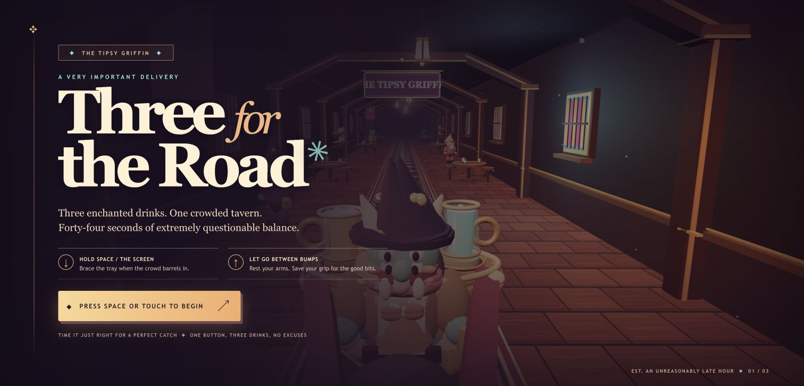
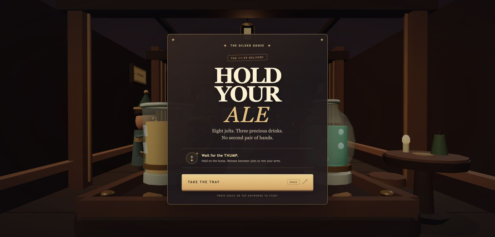

Disposable model test · 26 September 2026
Four models.
One tray.
I gave GPT-6 Astra, Claude Opus 5.5, GPT-6 Sol and GPT-6 Luna the same loose brief: make a small fantasy tavern game.
The interesting bit: Opus kept adding game feel. Patrols became hazards, drinks spilled differently, and it made a real little world around the job.
The one I wanted to keep playing
Tipsy
Tray
Claude Opus 5.5 made the strongest sense of a game. A goblin waiter, three drinks, a crowded route, generated music, speech and sound effects.
The completed build opens with a clear view of the tavern. Chrome checks covered the timer, spills, a timeout receipt and restart; a successful human delivery and real phone hardware are still unverified.
Play the other three
These are the generated files served as their own pages. Start each one and see how the same brief became a different tavern.

Mind the Pints
The Crooked Wyvern, three nervous drinks and a crowded delivery route.
PLAY ASTRA ↗
Three for the Road
A clear flight-ops read on the same job, with its own timing and grip language.
PLAY SOL ↗
Hold Your Ale
Quiet, clean and quick to understand: the Gilded Goose has eight jolts to survive.
PLAY LUNA ↗The fun was not in the benchmark.
It was in seeing a model choose what mattered. Opus made the task feel like a tavern job with a rhythm and a bit of mischief. Astra gave it a strong authored frame. Sol and Luna were quicker reads, with different ideas about how much system to show.
All four runs had max reasoning, a 128,000-token ceiling, the same tools and a writable project folder. The models could write files, run checks, use Three.js and request media. The generated media total was listed separately from the OpenRouter bill.
Observed run total: $48.368971095 through OpenRouter, plus $0.185 in listed media calls. All four models signalled finish. Opus finished on 30 September after 88 paid responses, of which 87 were saved and one was lost but settled. Its bill includes an adapter mistake: caching was enabled only from response 25. The interrupted continuation recovered a truncated file read from disk and resumed after a paid response whose content was unavailable.
This is a record of one disposable run, not a general model ranking. Play the games, then tell me which one you would keep.